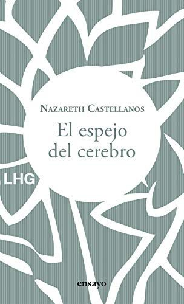
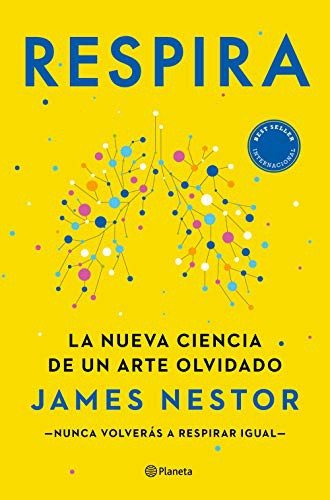
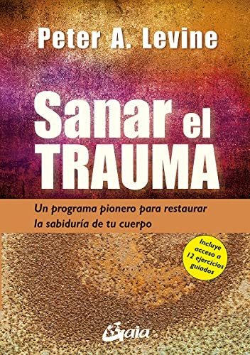

Libros de mindfulness, meditación y conciencia
Libros de mindfulness, meditación y conciencia en español: 1 libro completo para leer gratis aquí mismo y 17 fichas de títulos actuales.
En tiempos de estrés, haz lo que importa: una guía ilustradaOrganización Mundial de la Salud
En tiempos de estrés, haz lo que importa: una guía ilustradaOrganización Mundial de la SaludNeurociencia del cuerpoNazareth Castellanos
Neurociencia del cuerpoNazareth CastellanosEl espejo del cerebroNazareth Castellanos
El espejo del cerebroNazareth Castellanos
RespiraJames Nestor
RespiraJames Nestor
Sanar el traumaPeter A. Levine
Sanar el traumaPeter A. Levine
Sentir y saberAntonio Damasio
Sentir y saberAntonio DamasioPiensa como un monjeJay Shetty
Piensa como un monjeJay ShettyEl silencio en la era del ruidoErling Kagge
El silencio en la era del ruidoErling KaggeEl poder del ahoraEckhart Tolle
El poder del ahoraEckhart TolleSé amable contigo mismoKristin Neff
Sé amable contigo mismoKristin NeffDeja de ser túJoe Dispenza
Deja de ser túJoe DispenzaCómo lograr el milagro de vivir despiertoThich Nhat Hanh
Cómo lograr el milagro de vivir despiertoThich Nhat HanhVivir con plenitud las crisisJon Kabat-Zinn
Vivir con plenitud las crisisJon Kabat-ZinnEmociones destructivasDaniel Goleman
Emociones destructivasDaniel GolemanEl arte de la felicidadDalái Lama y Howard C. Cutler
El arte de la felicidadDalái Lama y Howard C. CutlerCuando todo se derrumbaPema Chödrön
Cuando todo se derrumbaPema ChödrönLa trampa de la felicidadRuss Harris
La trampa de la felicidadRuss HarrisMindfulness. Guía práctica para encontrar la paz en un mundo frenéticoMark Williams y Danny Penman
Mindfulness. Guía práctica para encontrar la paz en un mundo frenéticoMark Williams y Danny PenmanTemas relacionados
¿Estás eligiendo carrera?
Haz gratis el test de orientación vocacional de AURZANE: intereses, aptitudes, autoconcepto y hábitos de estudio, con informe completo.